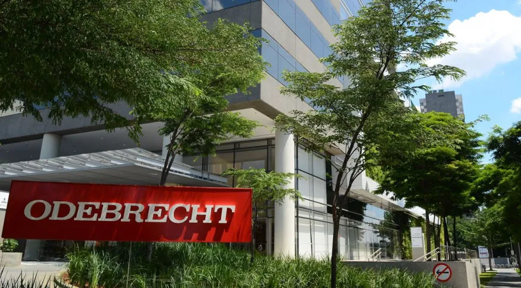
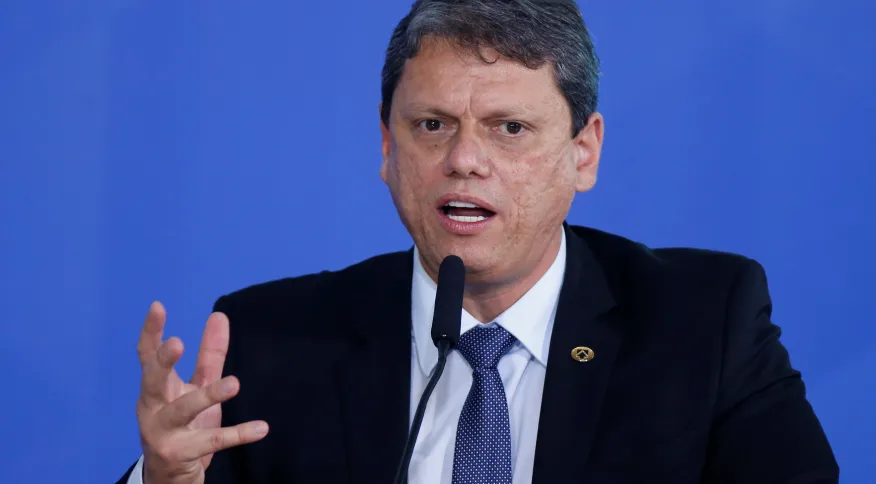
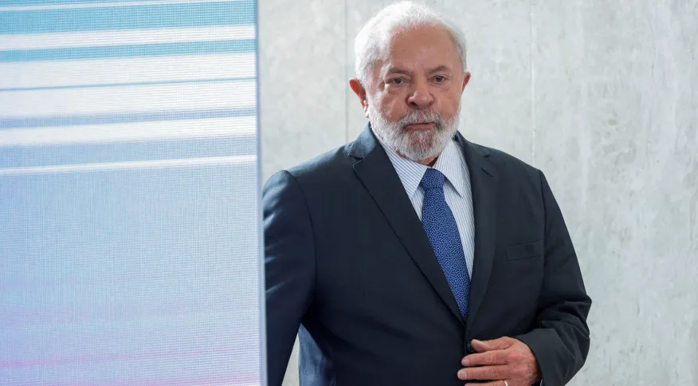

Decisão de Toffoli vai gerar revisão dos acordos de outras empreiteiras, dizem advogados “Efeito cascata” pode colocar em risco a devolução de bilhões de reais aos cofres públicos que deveriam ser pagos por empresas como Andrade Gutierrez, OAS, UTC e Camargo Correa

Toffoli ignorou parecer da corregedoria do MPF em decisão da Odebrecht, diz associação de procuradores Um dos principais argumentos do ministro para invalidar os sistemas eletrônicos de registros de propina da Odebrecht é que não foi firmada uma cooperação jurídica internacional entre Brasil, Estados Unidos e Suíça

Tarcísio fica no Republicanos e diz que ganhou aliado no ministério, afirmam interlocutores Governador de São Paulo, que ameaçou deixar o partido, ficou satisfeito com a decisão de Costa Filho de se licenciar de suas funções na executiva da legenda
TCU já analisa decisão de Dias Toffoli; presidente da corte determina reunião técnica A avaliação é que o movimento do ministro terá muitas implicações, e é necessário um esforço concentrado da corte

Aliados dizem que Lula recebe decisão de Toffoli como reconstrução histórica e veem caminho para reaproximação Ao anular provas do acordo de leniência da Odebrecht com a Lava Jato, o magistrado afirmou que a prisão do petista em 2018 foi uma “armação”